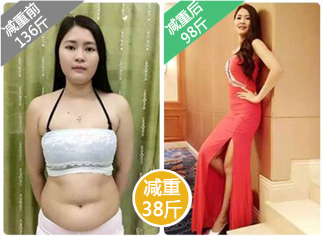
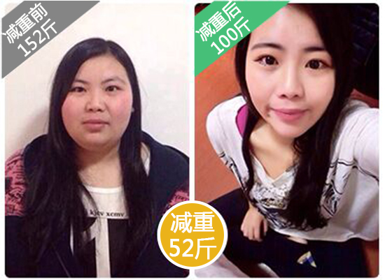

【教你一招食疗】
不吃药、不运动、躺着都能瘦，注意！千万别瘦过头了。
你有试过饥饿减肥,因管不住嘴而失败吗？
你有试过运动减肥,因无超人毅力长期坚持而失败吗？
你有试过抽脂减肥,风险大成本高易反弹且伤身而失败吗？
你有试过减肥药、减肥茶，因添加泻药瘦得快，停药立即反弹而失败吗？
如果你希望在短短2个月内，不吃药，不运动，只需通过一个神奇的食疗方法，就能轻松减掉30斤？如果这也是你所希望的，那么恭喜你来对地方了！看这篇文章的几分钟，将成为你减肥路上最后的选择！
为了防止页面不小心关闭，可以先添加微信，找悦悦老师了解更多，预览微信号：yue12866
加悦悦老师微信：yue12866 了解更多
想了解该减肥法，加老师微信：悦悦—权威健康老师！微信:yue12866（←长按可复制微信添加）
大家好，我叫张雪芬。
减肥以前身高165，体重70KG一直是我的心病。试过太多方法，吃减肥药、喝减肥茶，还喝过中药，基本没啥用。最坑爹的是，有一阵子服用某大牌明星代言的减肥产品，电视广告打得可响了，刚开始稀里哗啦拉肚子，瘦是瘦了，估计是腹泻瘦的。我一看产品果然有添加泻药成分：决明子和芦荟。停用之后，体重立马反弹，太坑人！再也不信广告了。
在微信群有一个专门讨论减肥的大群，其中有一个叫悦悦老师很受欢迎，大家都找她讨教减肥方法，我也加了她。
加上悦悦老师，和她倒了一肚子苦水。悦悦老师了解我以前的减肥经历之后，说以前吃的减肥产品可能含有对人体有害的成分，停用之后身体才会有这么大的反应。悦悦老师结合我的体质，给我健康科学的减肥方法，还推荐了一套食疗瘦身的“营养餐”给我，收到后老师还非常负责任地通过电话一对一指导我使用。
按照她给的方法，每天坚持，体重真的有变化。因为之前失败的经历，我不敢高兴太早。2个多月，减了42斤，平均每个月16斤左右，手臂啊腿啊都瘦下去了，特别是有好几层游泳圈的腰和大屁股，都瘦出好看的线条。
我慢慢停用之后，身体也没有任何的不适跟反弹的情况。半年多过去了，我依然保持现在49KG的身材。
想了解该减肥法，加老师微信：悦悦—权威健康老师！微信:yue12866（←长按可复制微信添加）
据悉，这种备受众多胖友热衷的神秘食疗法，不是茶，不是药，不是咖啡，不是奶昔，不是精油，更不是化学合成的。它全部都是来自大自然的恩赐，是由发酵成的微生物制剂与特制的五谷杂粮食材独家配方研制而成的健康瘦身食品。
“营养餐”不含任何泻药成分，重在加速人体代谢，加快体内毒素及宿便排出，最重要的是能够以生物的方式，自然粉碎长链脂肪，阻断脂肪记忆链，强力裂解，阻断脂肪形成，自然就快速瘦下来了。而非市面上的泻药或普通减肥产品。
想了解该减肥法，加老师微信：悦悦—权威健康老师！微信:yue12866（←长按可复制微信添加）
甩肉40斤，减肥其实没那么苦
用户：张静 身高：161cm
目前体重：45KG 原体重：64KG
减重成果：38斤(19KG）
没怀孕前我也是个漂亮的瘦子，怀孕后为了孩子死命的吃！原以为生了孩子会自然瘦下来，谁知孩子都2岁多了，体重一点也没减还越来越胖了！又丑又没形象，老公都嫌弃！特别想找回怀孕前的苗条身材！
为了减肥，吃了不少苦！早餐不吃，午餐吃水果，晚餐只吃蔬菜沙拉！结果经常饿得两脚发软，眼冒金星，喘不过气来！一个月下来，没瘦几斤，身体却出了问题，走路轻飘飘，居然还晕倒在路边！OMG！立即暂停节食减肥！
后来有朋友把悦悦老师的微信推荐给我，和老师聊过之后，她很严肃地批评了我，说我以前节食减肥就是慢性自杀，破坏了代谢系统，早晚要搞垮自己！通过几次了解，她很快给出了适合我的减肥方法。
开始我保持怀疑态度，觉得减肥哪有这么容易，但没想到奇迹竟然出现了！
接下来的半个月里，体重以每天少一斤的速度瘦下来了。1个月后，体重少了20斤，2个月后又少了15斤，3个月后体重降到45KG。算一算，前后总共减掉了38斤，比怀孕前还瘦！而且我整个人的状态非常好，完全没有不适感，正常吃，作息也规律，瘦下来后，整个人漂亮了一百倍！
在微信中搜索： yue12866
想了解该减肥法，加老师微信：悦悦—权威健康老师！微信:yue12866（←长按可复制微信添加）
（一）产后肥胖：由于孕期、哺乳期营养过剩造成脂肪堆积，形成肥胖。
(二）青春期肥胖：由于青春期发育导致的内分泌失调，形成肥胖。
（三）饮食性肥胖：不规律的饮食习惯，暴饮暴食、吃夜宵等造成的代谢失衡形成肥胖。
（四）遗传性肥胖：主要由先天遗传代谢缓慢，营养吸收能力强造成肥胖.
（五）压力性肥胖：由于工作学习压力大、食欲旺盛、新陈代谢能力减弱造成肥胖。
（六）水肿型肥胖：由于缺乏运动，或服用特殊药物等形成肥胖。
（七）男性啤酒肚、将军肚：由于长期饮酒或脂肪堆积形成的肥胖。
减掉38斤，脸瘦了下巴尖了，胖妈变女神
用户：叶梅 身高：164cm
目前体重：49KG 原体重：68KG
减重成果：38斤(19KG）
天生胖，生了孩子更胖！有一次和老公上街，看到一个肥胖的妇女走过，肚子比胸还大，厚厚的双下巴，脖子埋在肉堆里，走路特别困难。老公说，按这增长速度，明年你也是这体态了！虽说是句玩笑话，但被自己心爱的人嫌弃，心里总是不舒服，决定要减肥。
可是减肥真的太难了，试了很多产品，跑了很多步，根本减不下去，只想放弃！
看到我为减肥失败整天闷闷不乐，老公不知道从哪里帮我找到悦悦老师的微信，说找她靠谱！相信老公，我加了悦悦老师。
悦悦说我是产后发福，没有注意及时控制所以才长胖的。现在孩子大了不用喂奶，试试她的方法。照着她说的，30天的时候，我瘦了13斤，天哪！就这么减掉了？2个月时候遇到“瓶颈期”，有好几天没减掉体重！我以为就只能瘦这么多了。悦悦老师立即帮我调整了下减肥方案，没想到又开始瘦了，两个月的时候瘦到了49KG！在这期间悦悦老师一直询问我的情况以便更快的瘦身，真的很贴心！
女人真的得瘦了，才知道自己有多美！我现在是要身材有身材，要胸有胸。瞬间有了傲人的身材与气质，别提多给老公长脸了，老公恨不得天天抱着我睡觉了，哈哈哈。
在微信中搜索： yue12866
想了解该减肥法，加老师微信：悦悦—权威健康老师！微信:yue12866（←长按可复制微信添加）
采用“营养餐”食疗3-5小时，脂肪链就开始裂解了，肠道出现咕咕声。这个就是脂肪不断分解，加快代谢，油脂进入肠道，第二天就可以轻松排出油腻腻，黑乎乎，臭烘烘的“油便”了。
改变易胖体质，100天瘦52斤
用户：白彤 身高：163cm
目前体重：50KG 原体重：76KG
减重成果：52斤(26KG）
我是属于骨架偏小肉很多的类型，是易胖体质，还迈不开腿，管不住嘴，结果体重一路飙升到76KG！买衣服难，出汗多，被人嘲笑死胖子！因为胖，还一直单着。
偶然机会加了悦悦老师的微信，在她的朋友圈里看到很多减肥成功的案例，我非常心动。
开门见山就问她要产品，结果悦悦老师很贴心地问我的情况，我把我的饮食、作息、习惯等如实交代。悦悦老师分析了我的问题告诉我，我这种吃什么都容易胖的体质，需要调理好后再减肥。
体质还可以调？这么专业！按照她的方法，在没有减少饮食量，没有增加运动的情况下，竟然看到身体有微妙的变化。以前连喝水都胖，现在吃甜品，吃肉，体重也没有上涨，而且身体也没有不舒服。我激动坏了，快两个月的时候，减了30斤！持续坚持到3个多月的时候，总共减了52斤，很意外，我的大胸竟然没有缩水。
衣服从之前的XXL直接变成M，衣柜也塞满美美的衣服。朋友都说认不出我来了，变得特别有气质。如果不是悦悦老师指导有方，这辈子可能都尝不到做瘦子的甜头了，太感谢了！
在微信中搜索： yue12866
想了解该减肥法，加老师微信：悦悦—权威健康老师！微信:yue12866（←长按可复制微信添加）
这种神奇的食疗法吸油脂功能强大，能将全身的脂肪包裹、溶解、统统带走，瘦身的同时，还能通经络，散淤阻！既是“瘦身之王”也是“调养之王”，既能减肥，又能养颜嫩肤，还能将我们的体质调成健康的“易瘦体质”和“碱性体质”
郑重提醒：
比肥胖本身更可怕的是——有害身体健康的减肥方法。减肥，一定要做到安全，有效。选择很重要，不要再走冤枉路，别再多花冤枉钱，“营养餐”食疗，轻松瘦下来！
祝您早日瘦身成功，做回最美的自己。
第1楼 热评
第2楼 热评
第3楼 热评

第4楼 热评

第5楼 热评

第6楼 热评
第7楼 热评
第8楼 热评

第9楼 热评
第10楼 热评

第11楼 热评
第12楼 热评